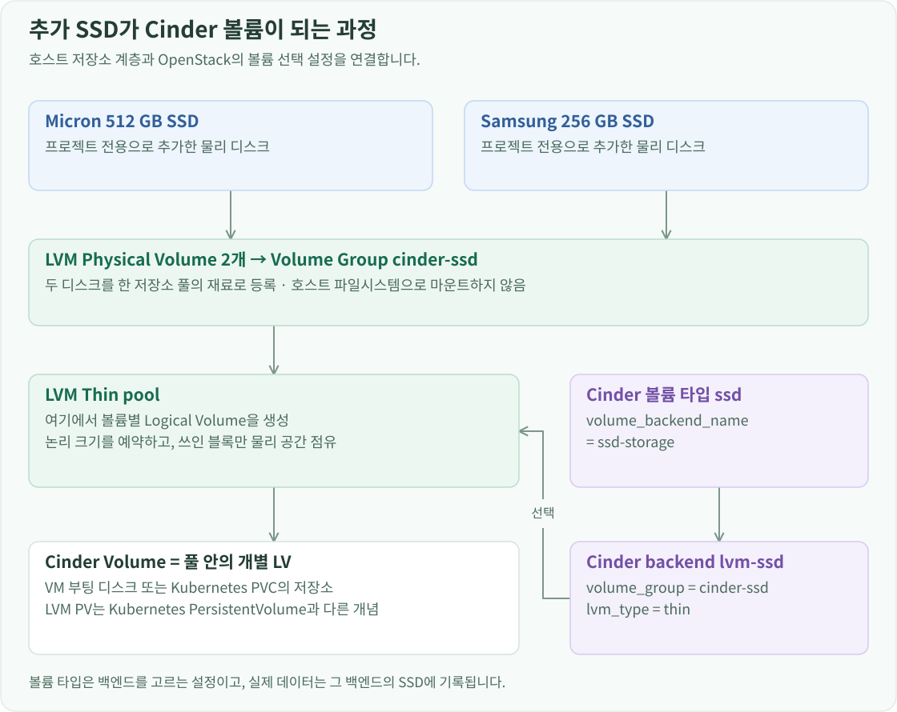
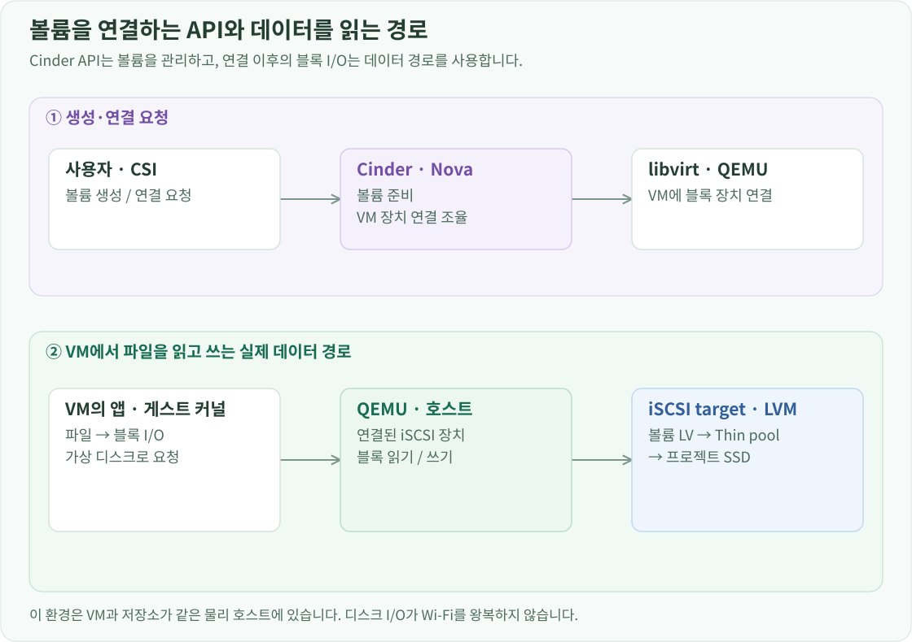

프로젝트 소개 · OpenStack 구축 · 전체 문서
구성 배경
OpenStack 설치 단계에서는 파일 기반의 LVM 저장소로 Cinder를 준비했습니다. 이후 프로젝트에 사용할 SSD를 따로 두고 싶어, 가지고 있던 여분 SSD 두 개를 데스크탑에 추가로 장착했습니다. 호스트 OS 디스크와 프로젝트 데이터를 저장하는 장치를 분리하고, 이 SSD를 Cinder 백엔드로 등록해 VM과 Kubernetes가 사용하도록 구성했습니다. Kubernetes·LB VM의 부팅 볼륨, 모델 가중치, WebUI 데이터와 모니터링 시계열을 이 전용 저장소에 두었습니다.
파일 기반 저장소와 추가 SSD 준비
lvm-1은 /var/lib/cinder_data.img를 loop 블록 장치로 연결하고, 그 위에 만든 cinder-volumes VG를 사용합니다. 파일 기반의 100 GiB 공간이며 thin pool은 약 95 GiB입니다. loop 장치 번호는 재부팅 때 달라질 수 있으므로 번호를 고정하지 않고 파일의 기존 연결을 확인해 복구하도록 했습니다. kolla-cinder-loop.service는 Docker보다 먼저 loop 연결과 VG 활성화를 마칩니다.

loop는 파일을 다른 디스크로 복사하는 기능이 아닙니다. 일반 파일을 블록 장치처럼 읽고 쓸 수 있게 연결하므로, 그 위에 LVM을 올려 Cinder의 동작을 먼저 구성할 수 있습니다. 물리 SSD를 추가하는 작업은 이 파일의 크기를 키우는 작업과 다릅니다. 새 블록 장치를 별도 VG로 등록하고 Cinder가 그쪽에도 볼륨을 만들 수 있게 하는 작업입니다.
추가한 장치는 Micron 512 GB와 Samsung 256 GB SSD입니다. 호스트 OS 디스크와 구분하기 위해 장치 이름만 보지 않고 모델·시리얼·파티션·마운트 상태를 함께 확인했습니다.
lsblk -d -o NAME,MODEL,SERIAL,SIZE
lsblk -o NAME,SIZE,TYPE,FSTYPE,MOUNTPOINTS
pvs -o pv_name,vg_name,pv_size,pv_free
첫 명령의 -d는 디스크 자체만 보여주고, -o는 보고 싶은 열을 지정합니다. 두 번째 명령은 하위 파티션과 파일시스템·마운트 지점을 함께 보여줍니다. pvs는 이미 LVM에서 사용 중인 장치와 VG를 확인합니다. 이렇게 사용할 SSD를 특정하고 기존 데이터를 정리한 뒤, /dev/disk/by-id/의 장치 경로를 각각 MICRON_SSD와 SAMSUNG_SSD 변수에 지정했습니다.
두 SSD를 Cinder에서 쓸 수 있는 LVM 공간으로 만드는 명령은 다음 두 개입니다.
sudo pvcreate "$MICRON_SSD" "$SAMSUNG_SSD"
sudo vgcreate cinder-ssd "$MICRON_SSD" "$SAMSUNG_SSD"
pvcreate는 대상 블록 장치에 LVM 메타데이터를 작성해 PV(물리 볼륨)로 등록합니다. vgcreate는 그 두 PV를 cinder-ssd라는 VG(볼륨 그룹)로 묶습니다. 기존 cinder-volumes를 늘리거나 볼륨을 옮기는 명령이 아닙니다. 두 SSD를 묶은 VG의 크기는 약 715.41 GiB이며, VM이 사용할 볼륨과 thin pool은 이후 Cinder가 생성합니다.
이 구조를 디렉터리처럼 생각하면 헷갈립니다. PV는 LVM이 사용하는 물리 장치이고, VG는 그 장치들의 공간을 모은 할당 단위입니다. VG에서 잘라 내는 논리 블록 장치가 LV입니다. Cinder는 호스트의 어떤 폴더에 볼륨 파일을 쌓는 대신, 이 VG에서 LV를 만들고 VM에 디스크로 제공합니다. 그래서 SSD에 호스트용 파일시스템을 만들어 마운트하는 과정 대신 PV·VG를 구성했습니다.
Cinder가 새 VG를 사용하도록 Kolla의 사용자 정의 설정 /etc/kolla/config/cinder/cinder-volume.conf에 백엔드를 추가했습니다. Kolla가 생성한 서비스 설정 파일을 직접 고치지 않고 override에 필요한 항목만 두어 재배포에도 설정이 유지되게 했습니다. 기존 lvm-1과 새 lvm-ssd를 함께 활성화했습니다.
[DEFAULT]
enabled_backends = lvm-1,lvm-ssd
[lvm-ssd]
volume_driver = cinder.volume.drivers.lvm.LVMVolumeDriver
volume_group = cinder-ssd
volume_backend_name = ssd-storage
lvm_type = thin
target_protocol = iscsi
target_helper = tgtadm
enabled_backends는 기존·신규 백엔드를 함께 켜고, volume_group은 방금 만든 Linux VG를 가리킵니다. volume_backend_name은 Cinder 스케줄러에 보고할 이름입니다. lvm_type=thin을 적용하면 Cinder LVM 드라이버가 thin pool을 만들고 개별 볼륨을 thin LV로 관리합니다. 이 환경에서는 약 679.64 GiB의 풀을 만들었습니다. target_protocol=iscsi와 target_helper=tgtadm은 만든 볼륨을 컴퓨트 호스트에 제공할 방식을 정합니다.
override 파일을 작성하는 것과 실행 중인 서비스에 적용하는 것은 별도 단계입니다.
kolla-ansible genconfig -i ~/openstack-deploy/all-in-one --tags cinder
kolla-ansible reconfigure -i ~/openstack-deploy/all-in-one --tags cinder
genconfig는 기본 설정과 override를 합쳐 Cinder가 사용할 설정을 생성합니다. reconfigure는 이를 실행 환경에 반영합니다. --tags cinder는 이 작업을 Cinder 관련 역할로 한정합니다.
사용자가 볼륨을 만들 때는 내부 백엔드 이름 대신 ssd라는 볼륨 타입을 선택하게 했습니다. 이 타입의 extra spec인 volume_backend_name=ssd-storage가 Cinder 스케줄러에 사용할 백엔드를 알려줍니다. 따라서 볼륨 타입 ssd → 백엔드 ssd-storage → VG cinder-ssd가 하나의 연결입니다.
openstack --os-cloud lab volume type create ssd
openstack --os-cloud lab volume type set \
--property volume_backend_name=ssd-storage ssd
volume type create는 사용자가 선택할 타입을 만들고, type set --property는 그 타입을 SSD 백엔드와 연결합니다.
LVM의 PV는 SSD·파티션 같은 장치를 등록한 Physical Volume이고, Kubernetes의 PV는 클러스터가 사용할 볼륨을 나타내는 PersistentVolume 자원입니다. 이름은 같지만 서로 다른 계층의 개념입니다.
VM의 디스크까지 이어지는 경로
VM은 이 볼륨을 부팅 디스크나 추가 디스크로 사용합니다. Glance 이미지는 Ubuntu 같은 운영체제의 원본이고, Cinder 부팅 볼륨은 그 이미지를 바탕으로 만든 해당 VM만의 쓰기 가능한 디스크입니다. VM마다 같은 Ubuntu 이미지를 사용해도, 패키지를 설치하거나 데이터를 쓰면 각자의 부팅 볼륨이 바뀝니다.

Cinder의 LVM 드라이버가 LV를 만들면 iSCSI target이 이를 컴퓨트 호스트에 제공합니다. iSCSI는 파일 공유가 아니라 TCP 연결을 통해 블록 장치의 읽기·쓰기 명령을 전달하는 방식입니다. 컴퓨트의 initiator가 이 장치를 연결하고, libvirt·QEMU가 VM의 가상 디스크로 붙입니다. 이 all-in-one 구성에서는 저장소와 컴퓨트가 같은 호스트에 있으므로, 이 경로가 집의 Wi-Fi를 왕복한다는 뜻은 아닙니다.
VM 안의 파일 읽기·쓰기
→ VM의 가상 디스크 → QEMU / 컴퓨트에 연결된 블록 장치
→ iSCSI target → Cinder 볼륨의 LV → thin pool → 프로젝트 SSD
볼륨 생성·연결은 Cinder API가 관리하지만, 이후 파일을 읽을 때마다 Cinder API에 파일 내용을 요청하지는 않습니다. 연결된 블록 장치 경로로 I/O가 흐릅니다. 추가 데이터 볼륨을 사용할 때는 VM 안에서 파일시스템과 마운트 지점을 준비하고, 이미지에서 만든 부팅 볼륨은 이미 들어 있는 운영체제로 부팅합니다. Kubernetes의 Pod용 볼륨은 뒤에서 CSI가 이 연결과 마운트 과정을 담당합니다.
논리 용량과 물리 사용량 구분
Thin provisioning을 사용하므로 볼륨의 논리 크기 합계와 SSD에 실제로 기록된 용량은 다릅니다. 예를 들어 80 GiB 부팅 볼륨을 만들었다고 처음부터 SSD의 80 GiB를 모두 기록하는 것은 아닙니다. 이 차이 때문에 운영 화면에서도 Nova의 로컬 디스크 할당량과 Cinder의 백엔드 여유 공간을 따로 표시합니다.
thin pool도 VG 안에 만드는 특별한 LV이며, 실제 데이터 영역과 블록 매핑 메타데이터를 관리합니다. 개별 thin LV가 커다란 폴더 안에 들어가는 구조는 아닙니다. 풀의 Data%는 데이터 영역 사용률, Meta%는 매핑 메타데이터 사용률입니다. VG의 VFree는 아직 어느 LV에도 배정하지 않은 공간이므로, 풀 안에 남은 공간과 다릅니다. 또 512 GB·256 GB라는 SSD 표기와 운영체제의 GiB 표기는 단위가 다릅니다. 물리 SSD 용량, VG 크기, thin pool 크기와 생성한 볼륨의 논리 크기는 각각 다른 계층의 용량입니다.
이 저장소를 Terraform의 VM 부팅 볼륨과 Kubernetes의 cinder-ssd StorageClass에서 사용하도록 연결했습니다. 별도로 장착한 프로젝트용 SSD를 OpenStack의 볼륨으로 제공하고, 그 위에 VM 디스크와 모델·애플리케이션의 영구 데이터를 저장하는 구조입니다.
여기서 만든 SSD 볼륨은 Terraform으로 만드는 VM의 부팅 디스크와 Cinder CSI를 통한 Kubernetes PVC에 사용합니다.